청소년상담사-1급(2교시) (2022-10-08 기출문제)
1과목: 비행상담
1. 학교폭력예방 및 대책에 관한 법령상 학교전담경찰관 업무로 옳지 않은 것은?
- 학교폭력 예방활동
- 피해학생 보호 및 가해학생 선도
- 학교폭력 단체에 대한 정보 수집
- 학교폭력 단체의 결성예방 및 해체
- 그 밖에 교장이 교육감과 협의해 학교폭력 예방 및 근절 등을 위해 필요하다고 인정하는 업무
(정답률: 알수없음)

2. 지위비행에 관한 내용으로 옳은 것을 모두 고른 것은?
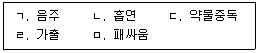
- ㄱ, ㄴ
- ㄱ, ㄷ
- ㄴ, ㄷ
- ㄷ, ㄹ
- ㄹ, ㅁ
(정답률: 알수없음)
3. 허쉬(T. Hirschi)의 청소년 비행을 통제하는 사회유대 요인으로 옳지 않은 것은?
- 애착
- 전념
- 참여
- 공감
- 신념
(정답률: 알수없음)
4. 다음은 청소년 보호법상 청소년보호종합대책의 수립 등에 관한 내용이다. 다음 ( )에 들어갈 내용을 순서대로 옳게 나열한 것은?
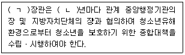
- ㄱ: 여성가족부, ㄴ: 1
- ㄱ: 교육부, ㄴ: 1
- ㄱ: 보건복지부, ㄴ: 1
- ㄱ: 여성가족부, ㄴ: 3
- ㄱ: 교육부, ㄴ: 3
(정답률: 알수없음)
5. 청소년 성격평가 질문지(PAI-A)에 관한 설명으로 옳지 않은 것은?
- 심리검사 척도개발에서 합리적, 경험적 접근을 강조하는 구성타당화에 근거를 두고 개발되었다.
- 반응방식을 '예/아니오'로 제한한 검사로, 인간의 다양한 성격을 기술하는 문항을 수집하여 문항표집을 만들었다.
- 검사의 하위요인은 타당도 척도, 임상척도, 치료고려 척도, 대인관계 척도로 구분하였다.
- 행동손상 정도 및 주관적 불편감 수준을 정확히 파악할 수 있는 4점 평정 척도로 구성되었다.
- 임상척도의 의미를 보다 정확하게 평가할 수 있는 결정문항지를 제시하였다.
(정답률: 알수없음)
6. 다음에서 설명하는 상담이론은?
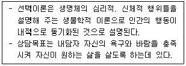
- 개인심리학
- 분석심리학
- 대상관계이론
- 현실치료
- 게슈탈트치료
(정답률: 알수없음)
7. 소년법상 보호처분과 그 내용의 연결이 옳지 않은 것은?
- 2호 처분: 수강명령
- 3호 처분: 장기 보호관찰
- 4호 처분: 단기 보호관찰
- 8호 처분: 1개월 이내 소년원 송치
- 9호 처분: 단기 소년원 송치
(정답률: 알수없음)
8. 다음에서 설명하는 머튼(R. Merton)의 적응유형은?
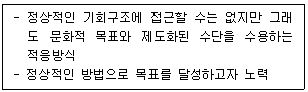
- 의례형
- 혁신형
- 동조형
- 도피형
- 반역형
(정답률: 알수없음)
9. 다음에서 설명하는 청소년복지시설은?
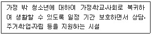
- 청소년자립지원관
- 지역아동센터
- 청소년쉼터
- 청소년치료재활센터
- 청소년회복지원시설
(정답률: 알수없음)
10. 중추신경흥분제에 해당하는 것을 모두 고른 것은?
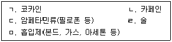
- ㄱ, ㄴ, ㄷ
- ㄱ, ㄷ, ㄹ
- ㄴ, ㄷ, ㅁ
- ㄴ, ㄹ, ㅁ
- ㄷ, ㄹ, ㅁ
(정답률: 알수없음)
11. 인터넷을 통한 성매매의 특징으로 옳은 것을 모두 고른 것은?
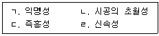
- ㄱ, ㄴ
- ㄷ, ㄹ
- ㄱ, ㄴ, ㄷ
- ㄴ, ㄷ, ㄹ
- ㄱ, ㄴ, ㄷ, ㄹ
(정답률: 알수없음)
12. 다음에서 설명하는 행동주의 상담기법은?
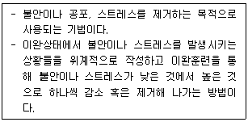
- 체계적 둔감법
- 심상홍수치료
- 토큰강화법
- 자유연상법
- 모델링
(정답률: 알수없음)
13. 다음에서 설명하는 청소년 상담기법은?
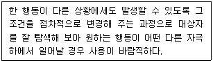
- 소거
- 용암법
- 자기지도
- 자극포화법
- 주장훈련법
(정답률: 알수없음)
14. 지역사회청소년통합지원체계(CYS-Net)에 관한 설명으로 옳지 않은 것은?
- 한국청소년활동진흥원이 CYS-Net 사업을 총괄하고 있다.
- 지방자치단체는 CYS-Net을 구축ㆍ운영하여야 한다.
- 학업중단청소년의 학업복귀와 사회진입을 위한 지원 사업이 활성화되었다.
- 위기청소년을 다각적으로 지원하는 1388 청소년지원단을 구성하여 운영하고 있다.
- 365일 24시간 원스톱(one-stop)서비스 제공을 목적으로 한다.
(정답률: 알수없음)
15. 청소년 비행을 내용에 따라 분류할 때 재산비행으로 옳은 것은?
- 음주, 흡연 등 성인에게는 허용되나 청소년에게는 금지되어 있는 행위
- 패싸움, 협박 등 타인의 신체에 위해를 가할 우려가 큰 행위
- 약물복용, 가출 등의 현실도피적 행위
- 성매매, 유해 인터넷 사이트 접속 등 건강한 성 발달을 저해하는 부적절한 행위
- 절도, 사기 등 타인에게 정신적으로나 물질적으로 손해를 입히는 행위
(정답률: 알수없음)
16. 청소년 비행의 개념 및 특성에 관한 설명으로 옳은 것은?
- 청소년 비행의 개념은 사회문화적 변화와는 달리 변하지 않는 특성을 가지고 있다.
- 청소년 비행은 보호 및 교육보다는 처벌의 관점이 중요하다.
- 청소년 비행은 시간적ㆍ공간적 상대성을 고려하지 않는다.
- 사회가 청소년에게 기대하는 규범에 벗어난 일탈행동도 청소년 비행에 해당된다.
- 세계적으로 비행이나 범죄에 연루되는 청소년의 나이는 높아지는 추세이다.
(정답률: 알수없음)
17. 학교폭력예방 및 대책에 관한 법률상 학교폭력 피해학생의 보호조치로 옳은 것은?
- 피해학생에 대한 서면사과
- 학내외 전문가에 의한 특별 교육이수 또는 심리치료
- 일시보호
- 사회봉사
- 출석정지
(정답률: 알수없음)
18. 소년법의 내용으로 옳지 않은 것은?
- “소년”이란 19세 미만인 자를 말한다.
- “보호자”란 법률상 감호교육(監護敎育)을 할 의무가 있는 자 또는 현재 감호하는 자를 말한다.
- 소년부 판사는 보호사건 심리결과, 수강명령과 장기 소년원 송치 처분은 12세 이상의 소년에게만 할 수 있다.
- 소년부는 조사 또는 심리를 할 때에 정신건강의학과의사ㆍ심리학자ㆍ사회사업가ㆍ교육자나 그 밖의 전문가의 진단, 소년 분류심사원의 분류심사 결과와 의견, 보호관찰소의 조사결과와 의견 등을 고려하여야 한다.
- 소년부 판사는 보호사건 심리결과, 사회봉사명령 처분은 15세 이상의 소년에게만 할 수 있다.
(정답률: 알수없음)
19. 학교 밖 청소년 지원에 관한 법률상 “학교 밖 청소년”으로 옳지 않은 것은?
- 취학의무를 유예한 청소년
- 고등학교에 입학한 후 1개월간 결석한 청소년
- 고등학교에 진학하지 아니한 청소년
- 고등학교에서 제적ㆍ퇴학처분을 받은 청소년
- 고등학교에서 자퇴한 청소년
(정답률: 알수없음)
20. 아동ㆍ청소년의 성보호에 관한 법령상 수사기관의 아동ㆍ청소년대상 성범죄의 수사절차에서 성범죄 피해자에 대한 보호 조치로 옳지 않은 것은?
- 피해자의 권리에 대한 고지
- 피해자에 대한 조사의 최소화
- 피해자와 가해자의 대질신문 최소화
- 긴급한 수사에서도 청소년 피해자의 학습권 보장
- 특별한 사정이 없으면 성범죄 수사 전문교육을 받은 인력이 피해자를 전담하여 조사
(정답률: 알수없음)
21. 청소년 사이버 비행의 원인 중 개인환경적 요인에 해당하는 것을 모두 고른 것은?
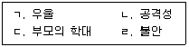
- ㄱ, ㄴ
- ㄷ, ㄹ
- ㄱ, ㄴ, ㄹ
- ㄴ, ㄷ, ㄹ
- ㄱ, ㄴ, ㄷ, ㄹ
(정답률: 알수없음)
22. DSM-5 진단기준에서 품행장애 청소년이 보이는 제한된 친사회적 정서로 옳지 않은 것은?
- 본인이 잘못을 저질러도 후회나 죄책감을 느끼지 않는다.
- 다른 사람의 감정은 무시하거나 신경 쓰지 않는다.
- 학교나 다른 활동 등에서 저조한 수행을 보이는 경우 자신을 탓하며 학대한다.
- 피상적이거나 가식적인 정서를 제외하고는 자신의 기분이나 정서를 다른 사람에게 드러내지 않는다.
- 자신의 행동으로 인한 부정적인 결과에 대해 일반적인 염려가 결여되어 있다.
(정답률: 알수없음)
23. 서덜랜드(E. Sutherland)의 차별접촉이론의 내용으로 옳은 것을 모두 고른 것은?
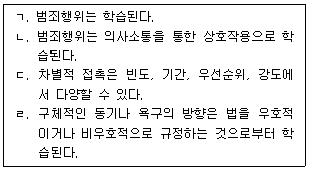
- ㄱ, ㄴ
- ㄷ, ㄹ
- ㄱ, ㄴ, ㄷ
- ㄴ, ㄷ, ㄹ
- ㄱ, ㄴ, ㄷ, ㄹ
(정답률: 알수없음)
24. 와이너(I. Weiner)의 사회적 비행 상담의 주요 과제로 옳지 않은 것은?
- 비행집단의 압력에 대처하는 방법을 알게 한다.
- 반사회적 성격장애를 교정하기 위해 도덕적 판단능력을 향상시킨다.
- 비행집단 내에서의 행동이 자신의 재능과 에너지를 소모하고 있다는 것을 인식하도록 돕는다.
- 비행집단 대신 소속감과 정체감을 제공하는 새로운 지지체계를 형성하도록 돕는다.
- 학교나 직업세계에서 비행이 아닌 다른 방법으로 자신의 목표를 정립하고 성취할 수 있도록 돕는다.
(정답률: 알수없음)
25. 다음에서 설명하는 비행이론은?
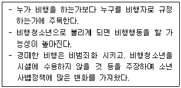
- 낙인이론
- 억제이론
- 중화이론
- 봉쇄이론
- 사회유대이론
(정답률: 알수없음)
2과목: 성상담
26. 다음에 해당하는 상담자의 상담기술은?
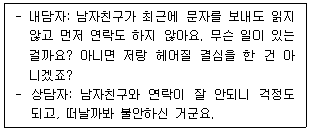
- 직면
- 해석
- 감정반영
- 자기개방
- 질문
(정답률: 알수없음)
27. 성폭력 가해자에 관한 상담목표로 옳지 않은 것은?
- 가해자가 가해행동을 인정하고 책임을 수용하도록 한다.
- 피해자의 고통과 상처에 대해 공감적으로 이해하도록 한다.
- 가해자의 폭력에 대한 태도나 가치관을 변화시킨다.
- 분노 조절 및 사회적 상호작용 기술 훈련을 통해 사회에 적응하도록 한다.
- 성폭력을 극복한 다양한 사람과 접촉하도록 권유한다.
(정답률: 알수없음)
28. 성상담의 초기상담과정에서 다루어야 할 내용으로 옳은 것을 모두 고른 것은?
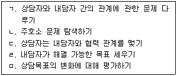
- ㄱ, ㄴ, ㅁ
- ㄱ, ㄷ, ㄹ
- ㄴ, ㄷ, ㄹ
- ㄴ, ㄷ, ㅁ
- ㄷ, ㄹ, ㅁ
(정답률: 알수없음)
29. 청소년과 성인에서의 성별 불쾌감에 관한 DSM-5 진단기준으로 옳지 않은 것은?
- 이성에 의해 사용되거나 참여하게 되는 인형, 게임, 활동을 강하게 선호
- 이성의 일차 또는 이차 성징에 대한 강한 갈망
- 이성으로서 대우받고 싶은 강한 갈망
- 자신이 이성의 전형적인 느낌과 반응을 가지고 있다는 강한 확신
- 이성이 되고 싶은 강한 갈망
(정답률: 알수없음)
30. 다음 내용에 해당하는 학자는?
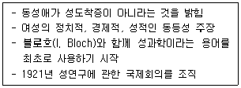
- 디킨슨(R. Dickenson)
- 허쉬펠트(M. Hirschfeld)
- 하이트(S. Hite)
- 킨제이(A. Kinsey)
- 마스터스(W. Masters)
(정답률: 알수없음)
31. 베스(E. Bass)와 데이비스(L. Davis)의 성폭력 피해자에 관한 상담 과정을 순서대로 바르게 나열한 것은?
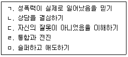
- ㄱ - ㄴ - ㄷ - ㄹ – ㅁ
- ㄱ - ㄷ - ㄴ - ㅁ – ㄹ
- ㄴ - ㄱ - ㄷ - ㅁ - ㄹ
- ㄴ - ㄷ - ㄱ - ㄹ – ㅁ
- ㄷ - ㄱ - ㄹ - ㄴ - ㅁ
(정답률: 알수없음)
32. 데이트 성폭력에 관한 설명으로 옳지 않은 것은?
- 연인사이라도 본인의 의사에 반하여 일어난 성행위는 성폭력이다.
- 청소년의 이성교제에서도 데이트 성폭력의 위험이 있다.
- 데이트 성폭력의 유형에는 상대방의 감시와 간섭과 같은 정신적인 스트레스와 불안을 일으키는 행동도 포함된다.
- 성적 친밀감이 있는 사이에서는 데이트 성폭력이 성립되지 않는다.
- 연인사이에서의 스토킹도 데이트 성폭력이 될 수 있다.
(정답률: 알수없음)
33. 청소년 성상담자의 자세로 옳지 않은 것은?
- 상담자는 자신의 역량과 한계를 인지하고 지속적으로 교육에 참여해야 한다.
- 내담자의 법적권리를 침해하거나 차별해서는 안된다.
- 상담자는 내담자의 복지, 권리 및 최선의 이익을 보호해야 한다.
- 내담자에게 연구목적을 구두로 설명하고 내담자에 대한 정보를 연구나 출판 등의 자료로 활용할 수 있다.
- 사회문화적 영향을 고려하여 내담자를 이해할 수 있어야 한다.
(정답률: 알수없음)
34. 청소년 성상담자의 자질로서 옳은 것을 모두 고른 것은?
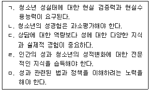
- ㄱ, ㄴ, ㄷ
- ㄱ, ㄹ, ㅁ
- ㄴ, ㄷ, ㄹ
- ㄴ, ㄹ, ㅁ
- ㄷ, ㄹ, ㅁ
(정답률: 알수없음)
35. 청소년 성역할 정체감에 관한 내용으로 옳지 않은 것은?
- 청소년기에 이성에 대한 관심이 또래에 비해 낮으면 동성애 정체감을 갖게 된다.
- 청소년은 신체적 성장과 성호르몬의 분비가 급증하면서 남자와 여자로서의 성적감정을 키운다.
- 성역할 정체감은 개인의 자아 속에 남성적 역할이나 여성적 역할과 연합된 특성을 수용하는 정도를 말한다.
- 사회가 요구하고 기대하는 성역할에 동일시하는 정도에 따라 개인은 자신의 성역할 정체감을 형성한다.
- 성역할 사회화는 개인의 일생을 통해 이루어진다.
(정답률: 알수없음)
36. 성폭력 피해자에 관한 위기관리 대응으로 옳은 것은?
- 성폭력 피해 후 법적 대응을 당장 하지 않는다면 법적증거자료를 수집하여 보관할 필요는 없다.
- 피해자가 미성년자인 경우 보호자가 동의하지 않으면 신고할 수 없다.
- 피해자의 심리적 안정을 위해 성폭력과 관련된 이야기는 하지 않도록 배려한다.
- 피해자가 직장인인 경우 힘들어도 병가나 휴가를 쓰지 말고 이전과 같이 근무하도록 안내한다.
- 가해자가 가족인 경우 가해자와 피해자가 같은 집에 거주하지 않도록 한다.
(정답률: 알수없음)
37. DSM-5 진단기준에서 변태성욕 장애의 하위유형별 특징으로 옳지 않은 것은?
- 마찰도착장애: 동의하지 않는 상대방에게 성기나 신체의 일부를 접촉하여 문지르는 증상이 6개월 이상 지속되는 경우
- 노출장애: 자신의 성기를 낯선 사람에게 노출시키는 증상이 6개월 이상 지속되는 경우
- 성적가학장애: 상대방의 신체적 또는 심리적 고통을 통해 성적흥분을 발현하는 증상이 6개월 이상 지속되는 경우
- 아동성애장애: 일반적으로 13세 이하의 아동을 대상으로 성적인 행위를 하는 증상이 6개월 이상 지속되는 경우
- 관음장애: 13세 이상의 자가 다른 사람의 모습을 몰래 훔쳐보는 증상이 6개월 이상 지속되는 경우
(정답률: 알수없음)
38. 사이버 성폭력에 관한 내용으로 옳지 않은 것은?
- 온라인상의 상대방은 쌍방향 커뮤니케이션 과정에 관여하는 대상으로 피해자나 가해자가 각각 한 명일 때를 말한다.
- 사이버 성폭력은 피해자에게 성적 수치심이나 모멸감 등의 실제적 피해를 유발한다.
- 문자, 이미지, 동영상 등을 통한 일방적인 성적 메시지를 보내는 행위가 포함된다.
- 사이버 스토킹은 특정인에게 정보통신망을 이용하여 지속적으로 접근하거나 성적 괴롭힘을 하는 행위가 포함된다.
- SNS 대화방을 이용한 원조교제 유도 및 알선 중재하는 행위가 포함된다.
(정답률: 알수없음)
39. 성적 의사결정에 관한 내용으로 옳은 것은?
- 자신이 성숙한 어른임을 증명해 보이기 위해서 성적접촉을 허용한다.
- 어떤 성행동도 자신의 의지에 부합해야 한다.
- Jurich 등은 혼전 성관계에 대한 태도에서 동의에 의한 허용을 결혼관계 이후에 이루어지는 성관계로 설명하고 있다.
- 상대방이 성적 접촉을 망설일 때 상대방을 끝까지 설득해서 성관계를 하려고 한다.
- 주어진 자원을 고려하여 타인의 의사에 따라 결정한다.
(정답률: 알수없음)
40. 임신의 증상에 관한 설명으로 옳은 것은?
- 오심ㆍ구토는 임신 전반기에 흔한 증상이다.
- 임신 전 보다 심장박동이 느려진다.
- 임신 후기 보다 임신 초기에 숨이 차고 숨쉬기가 힘들다.
- 임신 중에는 감정조절을 더 잘하게 된다.
- 임신 중에는 테스토스테론 호르몬 분비가 증가하여 질 분비물이 많아진다.
(정답률: 알수없음)
41. 성역할 이론과 그 내용의 연결이 옳지 않은 것은?
- 진화이론: 남성과 여성의 차이가 환경 적응과정에서 발달한다.
- 사회학습이론: 부모나 타인의 행동을 관찰하고 모방한다.
- 성위계이론: 사회적으로 권력과 권위가 있는 남자가 공식적 위치에 더 자주 거론되고 임명되는 경향이 있다.
- 성도식이론: 성에 대한 우리의 생각을 구조화하는 성도식에 따라 형성된다.
- 인지발달이론: 모든 아동이 개별 발달을 하기 때문에 각 개인에게 맞춰야 한다고 가정한다.
(정답률: 알수없음)
42. 프리만롱과 피터스(Freeman-Long & Pithers)의 성폭력 가해자 특성에 관한 설명으로 옳은 것은?
- 모든 일에서 남녀가 평등한 관계라고 생각한다.
- 자기가 원하는 것과 하고 싶은 것만 하고 용서를 기대한다.
- 남성은 여성을 인격체로서 성적 접근을 할 수 있다고 생각한다.
- 자신의 행동이 사회ㆍ문화적으로 인정받는 성관계라고 인식하지 않는다.
- 남성의 성적 접근에 대한 여성의 침묵을 'No'라고 해석한다.
(정답률: 알수없음)
43. 생물학적 성에 관한 내용으로 옳은 것은?
- 생식기 구조의 차이는 수정에서부터 구분되기 시작한다.
- 2차 성징이 시작되면 생물학적 성에 따른 생식기의 외형적 모양과 기능에 변화가 없다.
- 출생 시 외부 생식기 구조로 생물학적 성의 구분이 어려울 때는 내부 생식기 구조로 성별을 구별한다.
- 여성의 생식기는 생애 주기에 따라 모양과 기능이 변하지 않는다.
- 남성과 여성의 성기관은 사람에 따라 모양과 기능이 다르다.
(정답률: 알수없음)
44. 사이버 성문화가 청소년에게 미치는 영향에 관한 설명으로 옳지 않은 것은?
- 성에 대한 욕구만족 지연능력이 감소한다.
- 성에 대한 왜곡된 지식을 습득한다.
- 간접경험을 통해 성관계에 대한 현실 조망 능력이 향상된다.
- 익명성으로 인해 정서통제 능력의 저하와 불신감을 갖는다.
- 성충동을 유발하는 환경에 노출되어 성적통제력이 떨어진다.
(정답률: 알수없음)
45. 헐록(E. B. Hurlock)의 성발달 이론 중 성적 애착기에 관한 설명으로 옳은 것을 모두 고른 것은?
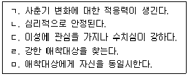
- ㄱ, ㄴ, ㄷ, ㄹ
- ㄱ, ㄴ, ㄷ, ㅁ
- ㄱ, ㄴ, ㄹ, ㅁ
- ㄱ, ㄷ, ㄹ, ㅁ
- ㄴ, ㄷ, ㄹ, ㅁ
(정답률: 알수없음)
46. 스턴버그(R. Sternberg)의 사랑의 삼각형 이론에 관한 설명으로 옳지 않은 것은?
- 사랑은 열정, 친밀감, 헌신의 세 가지 요소로 이루어진다.
- 열정은 신체적 매력을 느끼게 하거나 성적 몰입을 일으키는 것과 관련된다.
- 헌신은 사랑의 인지적 요소이다.
- 헌신만 남아 있는 상태를 낭만적 사랑이라고 한다.
- 친밀감은 사랑의 정서적 요소이다.
(정답률: 알수없음)
47. 피임도구에 관한 설명으로 옳지 않은 것은?
- 자궁 내 장치는 자궁 내 수정란의 착상을 방해하는 방법이다.
- 페미돔은 성병감염 및 에이즈 예방에 탁월한 효과가 있다.
- 콘돔은 휴대가 간편하고, 가격이 저렴하고, 피임 성공률이 비교적 높다.
- 페미돔은 유일하게 여성이 사용하는 일시적 피임법이다.
- 1920년대에 라텍스 콘돔이 제작ㆍ사용되면서 피임 효과가 높아졌다.
(정답률: 알수없음)
48. 성감염증과 그 증상에 관한 설명으로 옳은 것은?
- 임질은 성교나 성기접촉으로만 감염되며 눈에 직접 접촉되면 실명될 수 있다.
- 매독은 트레포네마 팔리둠이라는 균이 점막이나 피부를 통해 전염된다.
- 음부포진은 성관계 후 입주위에 주로 나타난다.
- 후천성 면역결핍증(AIDS)은 인간유두종바이러스(HPV)가 혈액과 정액을 통해 전염된다.
- 트리코모나스는 원충에 의한 감염으로 성관계, 혈액에 의해 전염된다.
(정답률: 알수없음)
49. 동성애에 관한 설명으로 옳지 않은 것은?
- 오늘날 동성애는 다양한 성 표현의 일부분이다.
- DSM-5 진단기준에서는 동성애를 이상 성행동이 아닌 성적 지향성의 문제로 간주한다.
- 동성애 청소년들은 부모 및 주변 어른들의 정서적 지지를 필요로 한다.
- 동성애 청소년들은 상담을 통해 성적지향을 바꿀 수 있도록 한다.
- 동성애 청소년들은 사회적 고립, 주의집중의 곤란, 낮은 자존감 등으로 심한 우울감을 경험하기도 한다.
(정답률: 알수없음)
50. 아동ㆍ청소년의 성보호에 관한 법령상 성범죄의 신고 의무 대상이 아닌 기관은?
- 학교 밖 청소년 지원센터
- 어린이집
- 경찰서
- 청소년 보호ㆍ재활센터
- 한부모가족복지시설
(정답률: 알수없음)
3과목: 약물상담
51. 다음과 같이 약물 중독의 원인을 설명하는 콜롬보(P. Colombo)의 모델은?
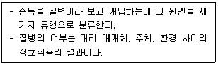
- 공중보건모델
- 질병모델
- 사회학습모델
- 사회문화모델
- 도덕ㆍ의지모델
(정답률: 알수없음)
52. 브라운(S. Brown)등이 말한 알코올(술)에 관한 기대 6가지에 해당하지 않는 것은?
- 술은 나의 주장을 더 잘하게 할 것이다.
- 술은 사회적, 신체적인 즐거움을 줄 것이다.
- 술은 성적 능력과 성적 만족을 증가시킬 것이다.
- 술은 긴장을 풀어줄 것이다.
- 술은 나를 더 성숙하고 성장하게 해줄 것이다.
(정답률: 알수없음)
53. 의료용 마약류 졸피뎀의 안전사용 기준으로 옳지 않은 것은?
- 사용 시 남용 및 의존 가능성을 항상 염두에 두어야 한다.
- 불면증 치료 시 1일 권장량을 초과해서는 안 된다.
- 치료기간은 가능한 짧아야 한다.
- 만 18세 미만의 환자에게는 투여하지 않는다.
- 복합수면 행동으로 호흡기능이 저하된 고령자의 경우 즉시 투여하여야 한다.
(정답률: 알수없음)
54. 중추신경 억제제로 작용하는 약물은?
- 벤조디아제핀류
- 메스암페타민
- 덱스드린
- 코카인
- 엑스터시
(정답률: 알수없음)
55. 다음 사례는 블랙(C. Black)이 말한 알코올 중독자의 자녀 유형 중 어디에 해당하는가?
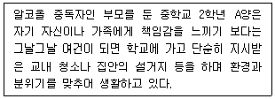
- 마스코트
- 위로자
- 책임부담자
- 적응자
- 행동화하는 아이
(정답률: 알수없음)
56. 암페타민에 관한 설명으로 옳은 것을 모두 고른 것은?
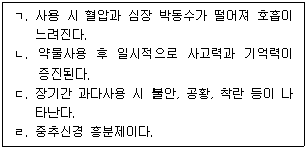
- ㄱ, ㄴ
- ㄱ, ㄷ
- ㄴ, ㄹ
- ㄱ, ㄴ, ㄹ
- ㄴ, ㄷ, ㄹ
(정답률: 알수없음)
57. 약물남용 1차 예방에 관한 내용으로 옳은 것을 모두 고른 것은?
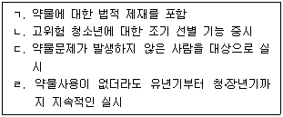
- ㄱ, ㄴ
- ㄱ, ㄷ
- ㄴ, ㄷ
- ㄴ, ㄷ, ㄹ
- ㄱ, ㄴ, ㄷ, ㄹ
(정답률: 알수없음)
58. 대마초에 관한 설명으로 옳지 않은 것은?
- 크랙, 헤로인과 같은 합성 강성마약이다.
- 장기간 사용 시 조현병적 증상을 유발할 수 있다.
- 향정신성 효과와 진통 효과는 THC에 기인한다.
- 빈번하고 정기적인 사용은 무동기증후군을 유발한다.
- 현행 법령상 마약류 중 대마로 분류된다.
(정답률: 알수없음)
59. 소년법을 근거로 약물남용 청소년에게 소년담당 검사가 부과할 수 있는 것을 모두 고른 것은?
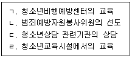
- ㄱ, ㄴ
- ㄱ, ㄷ
- ㄴ, ㄷ
- ㄱ, ㄴ, ㄹ
- ㄱ, ㄴ, ㄷ, ㄹ
(정답률: 알수없음)
60. 다음에서 설명한 약물 갈망욕구에 대처하는 상상기법은?
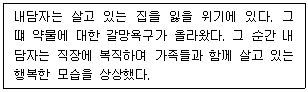
- 이미지 재초점
- 부정적 이미지 대체
- 긍정적 이미지 대체
- 이미지 리허설
- 이미지 정복
(정답률: 알수없음)
61. 임산부의 고위험 음주 양상을 선별하기 위해서만 사용하는 도구는?
- SASSI-3
- TWEAK
- CAGE
- POSIT
- AUDIT
(정답률: 알수없음)
62. 알코올 중독의 폐해와 부작용으로 인한 뇌의 영역별 증상에 해당하지 않는 것은?
- 전두엽: 논리적으로 생각하지 못함, 사소한 일도 참지 못함
- 해마: 기억이 나지 않거나 필름 끊김 현상이 일어남
- 소뇌: 비틀비틀 걸음
- 변연계: 혀가 꼬임, 같은 말 반복, 말소리 강약조절이 안됨
- 연수: 호흡마비
(정답률: 알수없음)
63. 다음은 프로차스카(J. Prochaska) 등의 초이론 모형 변화단계 중 어느 단계에 해당하는가?
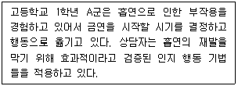
- 전 숙고 단계
- 숙고 단계
- 준비 단계
- 실행 단계
- 재발 단계
(정답률: 알수없음)
64. 헤로인과 같은 아편계 약물중독의 대표적인 치료제로 옳은 것은?
- 토피라메이트
- 리튬
- 메사돈
- 디설피람
- 메틸페니데이트
(정답률: 알수없음)
65. 다음과 같은 주요 증상과 부작용을 일으키는 약물로 옳은 것은?
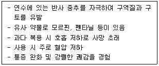
- 헤로인
- LSD
- 마리화나
- MDMA
- 암페타민
(정답률: 알수없음)
66. 약물중독과 관련된 개념의 설명으로 옳지 않은 것은?
- 교차 내성: 한 가지 약물에 내성이 생긴 사람에게 비슷한 약물 구조를 가진 다른 약물을 투여했을 때도 내성이 나타나는 현상
- 후금단: 장기간 사용하던 약물의 중단 혹은 감소가 일정 기간 지난 후에 나타나는 금단증상
- 갈망: 기존에 사용했던 약물을 다시 사용하고자 하는 심리 및 신체적 욕망
- 시소원칙: 약물의 효과와 동일하게 경험되는 금단 증상
- 내성: 같은 약물 효과를 경험하기 위해 기존의 약물 사용량보다 더 많은 약물이 필요해지는 현상
(정답률: 알수없음)
67. 다음 약물들 중 약리적 효과에 따른 분류로 옳은 것을 모두 고른 것은?
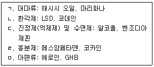
- ㄱ, ㄴ
- ㄱ, ㄷ, ㄹ
- ㄱ, ㄷ, ㅁ
- ㄴ, ㄷ, ㄹ
- ㄴ, ㄷ, ㄹ, ㅁ
(정답률: 알수없음)
68. 청소년 약물 남용에 관하여 고전 및 현대 정신역동 모델의 설명으로 옳은 것을 모두 고른 것은?
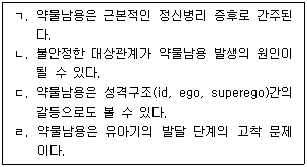
- ㄱ, ㄹ
- ㄴ, ㄷ
- ㄴ, ㄹ
- ㄱ, ㄴ, ㄷ
- ㄱ, ㄴ, ㄷ, ㄹ
(정답률: 알수없음)
69. 다음 사례에 나타난 개념과 접근을 사용하는 상담이론은?
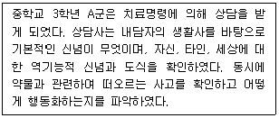
- 게슈탈트이론
- 정신역동이론
- 인지행동이론
- 현실치료이론
- 가족체계이론
(정답률: 알수없음)
70. 청소년 약물 남용의 위험 요인과 특성에 해당하지 않은 것은?
- 아동기 정신질환, 반사회적 행동 및 약물 사용 경험
- 사회와 성인집단에 대한 불신 및 분노의 태도
- 중독의 과정은 성인과 유사하지만 중독되는 과정의 속도는 청소년이 더 느림
- 약물남용 및 반사회적인 가족환경, 부모의 훈육 부재
- 청소년이 속한 지역 사회의 가난, 범죄, 약물에 대한 높은 접근성
(정답률: 알수없음)
71. 젤리넥(E. K. Jellinek)의 알코올 중독의 진행 과정에 관한 설명으로 옳지 않은 것은?
- 젤리넥은 알코올 중독이 진행성 질병이라고 주장한다.
- 1단계는 전 알코올 증상 단계로 사교적인 목적이며, 중독 여부와 상관이 없다.
- 2단계는 전조 단계로 문제성 음주 단계이며 블랙아웃이 발생하나, 술의 문제에 대해서는 부인한다.
- 3단계는 결정적 단계로 음주에 대한 통제력 상실이 나타난다.
- 4단계는 만성 단계로 술에 완전히 집착하며 내성과 금단 증상 및 각종 문제를 겪으며, 자신의 문제를 인정하고 변화를 추구한다.
(정답률: 알수없음)
72. 다음에서 설명하는 약물상담에 관한 치료적 접근은?
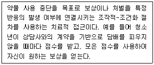
- 체계적 둔감화(systematic desensitization)
- 내현적 혐오 치료(covert aversion therapy)
- 인지 재평가(cognitive reappraisal)
- 수반성 관리(contingency management)
- 단서 노출(cue exposure)
(정답률: 알수없음)
73. 약물남용 문제 집단상담에 관한 내용으로 옳지 않은 것은?
- AA, NA는 대표적인 자조 집단상담의 예시이다.
- 집단상담은 교육, 치료, 지지의 기능을 한다.
- 약물상담의 특성상 저항을 줄이기 위해 비밀엄수 한계에 대해서는 선택적으로 안내한다.
- 약물남용 집단상담은 일부 내담자들에게는 맞지 않을 수도 있다.
- 집단 리더는 초기 단계에 집단 구성원이 안전감을 느낄 수 있도록 다양한 집단 기술을 사용할 필요가 있다.
(정답률: 알수없음)
74. 밀러와 롤릭은 동기강화상담(Miller & Rollnick, 2013)의 4가지 정신을 제시했다. 다음중 정신끼리만 옳게 연결한 것은?
- 연민(동정) - 불일치감 만들기
- 유발성 – 자기효능감지지
- 수용 – 협동정신
- 연민(동정) - 자율성
- 수용 - 공감표현
(정답률: 알수없음)
75. 공존질환(co-occurring disorders) 치료적 접근에 관한 내용으로 옳지 않은 것은?
- 공존질환을 이중 장애 또는 이중 진단이라고도 불린다.
- 병렬적 접근은 중독과 정신건강 문제를 동시에 한 치료시설의 같은 영역에서 단일팀으로 접근한다.
- 공존질환 문제의 독특성과 심각성으로 인해 팀 접근을 권고한다.
- 순차적 접근은 중독과 정신건강 문제를 순차적으로 치료하며, 같은 기관의 다른 진료과 또는 다른 기관에서 치료를 실시한다.
- 무썰(K. T. Mueser, 2015)등은 공존질환 치료에 있어서 IDDT 모델을 제시했다.
(정답률: 알수없음)
4과목: 위기상담
76. 자살에 관한 설명으로 옳지 않은 것은?
- 가족력은 자살시도의 위험 요소이다.
- DSM-5 진단기준에 의하면 자살행동은 정신질환이다.
- 자살생각은 실제적 자살의 중요한 예측 지표이다.
- 자살을 암시하는 행동적 징후로 오랫동안 불안정하고 침울하던 사람이 이유 없이 갑자기 평화스럽게 보이거나 즐거워 보이는 등 태도가 변한다.
- 청소년 자살에서 자살생각이나 자살시도가 사망으로 이어지는 비율은 성인에 비해 높지 않다.
(정답률: 알수없음)
77. 다음에서 설명하는 자살에 관한 이론적 모델은?
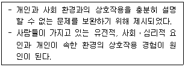
- 스트레스-취약성 모델
- 인지적 모델
- 유전생물학적 모델
- 사회학적 모델
- 정신역동적 모델
(정답률: 알수없음)
78. 청소년 위기에 관한 설명으로 옳지 않은 것은?
- 청소년 위기의 위험을 높이는 선행요인으로는 상황적 요인, 발달적 요인, 사회문화적 요인이 있다.
- 위기 청소년의 보호요인 중 개인요인은 정서 및 심리적 요인과 유능감 등이 있다.
- 캐플런(G. Caplan)은 청소년 위기로 진행하는 과정을 3단계로 나누어서 설명한다.
- 위기 청소년의 주요 비행 원인 중 하나는 학업중단이다.
- 청소년이 위기를 성공적으로 해결하면 청소년은 성장하고 성숙해진다.
(정답률: 알수없음)
79. 자연적ㆍ사회적 재난의 특성에 해당하지 않는 것은?
- 재난의 불확실성
- 단순성
- 상호작용성
- 누적성
- 안전 불감증
(정답률: 알수없음)
80. 집단따돌림에 관한 설명으로 옳지 않은 것은?
- 집단따돌림은 주로 일회성 행동으로 나타난다.
- 집단따돌림은 적극적인 심리적 따돌림, 소극적인 심리적 따돌림, 물리적 따돌림의 3가지로 구분할 수 있다.
- 2명 이상이 타인에게 힘의 불균형 상황에서 신체적, 심리적 폭력을 행사하는 것을 말한다.
- 집단따돌림의 예시로 겁주는 행동, 빈정거림, 면박주기, 골탕 먹이기, 비웃기 등이 있다.
- 누군가에게 의도적으로 해를 가하기 위한 행동이다.
(정답률: 알수없음)
81. 학교폭력의 원인 중 가정적인 요소에 관한 설명으로 옳지 않은 것은?
- 가정의 구조적 특성과 기능적 특성으로 구분한다.
- 부모의 자녀양육방식은 학교폭력과는 관련이 없다.
- 자녀를 온정적이고 관심어린 태도로 대하지 않는 부모는 자녀의 충동성과 공격성을 증가시킬수 있다.
- 공격적 행동을 나타내는 부모는 자녀가 학교폭력 가해자가 될 수 있는 위험성을 증가시킨다.
- 부모의 지시와 감독의 부재는 학생의 학교폭력 가해행동과 관련된 가정적인 요소이다.
(정답률: 알수없음)
82. 학교폭력에 관한 설명으로 옳은 것을 모두 고른 것은?
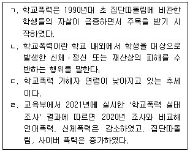
- ㄱ
- ㄱ, ㄴ
- ㄱ, ㄴ, ㄷ
- ㄴ, ㄷ, ㄹ
- ㄱ, ㄴ, ㄷ, ㄹ
(정답률: 알수없음)
83. 다음에서 설명하는 학교폭력의 유형은?
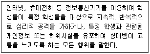
- 따돌림
- 강제적 심부름(셔틀)
- 사이버 따돌림
- 협박
- 감금
(정답률: 알수없음)
84. 큐블러 로스(E. Kübler - Ross)의 죽음의 반응단계에 해당하지 않는 것은?
- 부인과 고립
- 분노
- 타협
- 우울
- 거부
(정답률: 알수없음)
85. 자살 위기상담에 임하는 상담자의 태도에 관한 설명으로 옳지 않은 것은?
- 상담자는 내담자의 자살이유를 진지하게 받아들인다.
- 내담자가 자살에 관해 이야기하는 것이 대단히 고통스러운 일임을 인식해야 한다.
- 자살이유가 상담자에게 사소하거나 비합리적인 것으로 여겨지더라도 대충 처리하는 듯이 보여서는 안 된다.
- 자살의도를 직접적으로 묻지 않는다.
- 상담자는 내담자에게 기본적인 이해와 공감을 느끼고 전달할 수 있어야 한다.
(정답률: 알수없음)
86. 스마트폰 중독에 관한 설명으로 옳은 것을 모두 고른 것은?
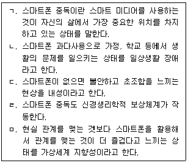
- ㄱ, ㄴ
- ㄱ, ㄷ, ㄹ
- ㄴ, ㄹ, ㅁ
- ㄱ, ㄴ, ㄹ, ㅁ
- ㄱ, ㄴ, ㄷ, ㄹ, ㅁ
(정답률: 알수없음)
87. 청소년 자살행동의 특성으로 옳지 않은 것은?
- 치명적인 자살율은 성인기로 갈수록 증가하지만 자살 시도율이 가장 높은 시기는 청소년기이다.
- 청소년은 인터넷 게임이나 판타지 소설류 등의 영향으로 죽음에 대해 환상을 가지는 경우가 많다.
- 청소년 자살은 성인에 비해 정신질환이 자살에 직접적 영향을 준다.
- 청소년 자살은 가족관계나 친구관계에서 느끼는 분노, 좌절, 충동성 등 심리적 스트레스나 위기감으로 유발된다.
- 청소년 자살은 충동적인 경우가 많다.
(정답률: 알수없음)
88. 위기에 처한 내담자에 관한 신경 생리학적 설명으로 옳은 것을 모두 고른 것은?
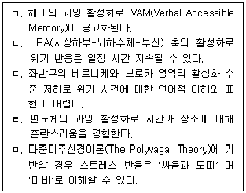
- ㄱ, ㄴ
- ㄷ, ㄹ, ㅁ
- ㄱ, ㄴ, ㄷ, ㄹ
- ㄱ, ㄴ, ㄹ, ㅁ
- ㄴ, ㄷ, ㄹ, ㅁ
(정답률: 알수없음)
89. 길리랜드(B. Gilliland)의 6단계 위기개입 모델 중 다음에 해당하는 단계는?
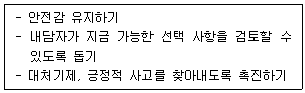
- 문제 정의하기
- 안전 확보하기
- 지지하기
- 대안 탐색하기
- 참여 유도하기
(정답률: 알수없음)
90. 위기 사정에 관한 설명으로 옳은 것은?
- 위기 사정은 첫 면접 이후 시작된다.
- 내담자의 성격에 초점을 둔다.
- 위기 사정은 과거 지향적이다.
- 내담자의 정신역동에 초점을 두면 사정의 치료적 개입 효과를 높일 수 있다.
- 정보 수집은 선택적이다.
(정답률: 알수없음)
91. 위기개입 상담자의 소진에 관한 설명으로 옳지 않은 것은?
- 개인의 성격 특성이 영향을 미친다.
- 증상은 에너지 저하부터 죽음에 이르기까지 다양하다.
- 대리 외상으로 인한 급성 스트레스 반응이다.
- 내담자에 대한 과잉동일시가 영향을 미친다.
- 불합리한 업무 배정이 영향을 미친다.
(정답률: 알수없음)
92. 다음에서 설명하는 위기개입 이론은?
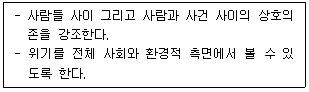
- 대인이론
- 정신분석이론
- 체계이론
- 적응이론
- 혼돈이론
(정답률: 알수없음)
93. 다음에서 설명하는 위기 유형은?
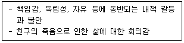
- 발달적 위기
- 실존적 위기
- 상황적 위기
- 환경적 위기
- 체계적 위기
(정답률: 알수없음)
94. 애착 외상 반응을 초래하는 촉발요인을 모두 고른 것은?
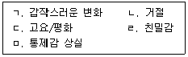
- ㄱ, ㄴ
- ㄱ, ㄷ, ㄹ
- ㄴ, ㄹ, ㅁ
- ㄱ, ㄴ, ㄷ, ㅁ
- ㄱ, ㄴ, ㄷ, ㄹ, ㅁ
(정답률: 알수없음)
95. 아동 성학대에 관한 설명으로 옳지 않은 것은?
- 피해 아동은 수면장애를 경험할 수 있다.
- 근친이나 이웃 등 아는 사람에 의해 주로 발생한다.
- 피해 아동은 지나치게 순종적으로 행동하기도 한다.
- 가해자가 지위를 이용하여 강제한다는 점에서 성인 성학대와 다르다.
- 피해 아동은 사건을 순차적으로 기억하지 못할 수 있다.
(정답률: 알수없음)
96. 위기상담에 관한 설명이 아닌 것은?
- 즉각적인 개입
- 희망과 기대를 갖도록 격려
- 간접적인 조력
- 제한된 목표 설정
- 행동에 초점화
(정답률: 알수없음)
97. 가정폭력 피해자가 호소하는 PTSD에 관한 설명으로 옳지 않은 것은?
- 외상 경험 후 30일까지 증상이 나타날 경우 진단을 내린다.
- 아동의 경우 동반이환 양상으로 반항장애와 분리불안장애를 경험할 수 있다.
- 외상 전 요인으로 유전적 요인이 포함된다.
- 일생동안 남성보다 여성에게 흔히 발견된다.
- 과각성, 재경험, 회피 행동 등이 주요 증상이다.
(정답률: 알수없음)
98. 힐(R. Hill)의 위기가족에 관한 설명으로 옳지 않은 것은?
- 가족구성원의 지각과 판단에 따라 위기성이 결정될 수 있다.
- 위기 사건의 결과로 가족구성원의 역할 유형이 변화된다.
- 가족의 경제적 풍요로움은 위기 사건에 성공적으로 대처하게 한다.
- 위기가족 평가는 가족의 구조를 파악함으로써 시작된다.
- 적응의 공통 과정을 위기 → 해체 → 재조직 → 회복으로 설명한다.
(정답률: 알수없음)
99. 트라우마 체계 치료에서 내담자 정서 상태를 설명하는 단계 중 '재구성하기'에 해당되는 것은?
- 정서 강화를 예방하기 위하여 촉진을 최소화하기
- 촉발요인으로 활성화된 정서를 조절하도록 돕기
- 플래시백으로 압도될 경우 안전을 유지하도록 돕기
- 정서를 지속적으로 관리하고 환경에 참여하도록 하기
- 위기 사건과 관련된 맥락적 정보를 찾도록 하기
(정답률: 알수없음)
100. 홉폴(S. Hobfoll) 등의 PTSD 예방을 위한 초ㆍ중기 개입 원리 중 안전감 증진하기에 관한 설명으로 옳지 않은 것은?
- 외상 촉발요인을 맥락적으로 구별할 수 있도록 한다.
- 그라운딩 기법을 활용한다.
- 외상에 관해 이야기하는 것이 더 불안하게 한다면 제한하도록 한다.
- 자기효능감의 바탕이 되는 행동 목록을 발전시킨다.
- 외상에 관한 잘못된 정보가 공유되는 것을 제한한다.
(정답률: 알수없음)